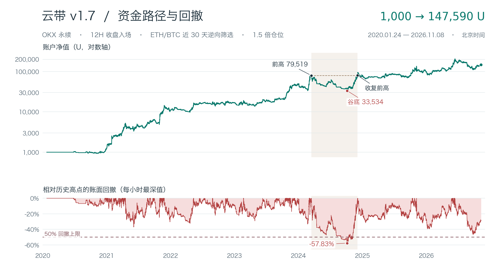

收益靠哪些交易
每赚一笔平均 +1,873.47U，每亏一笔平均 −349.98U。最大的十笔合计贡献净利润的 120.15%，其余交易合计亏损。
顺个币趋势，等价格刺穿周一轨道后收回。ETH 相对 BTC 走弱时只做多，走强时只做空。

每赚一笔平均 +1,873.47U，每亏一笔平均 −349.98U。最大的十笔合计贡献净利润的 120.15%，其余交易合计亏损。
约 264 天才收复前高。净值从 79,519U 跌到 33,534U，账面最大回撤 57.83%，超过设定的 50% 上限。按小时高低值估计，回撤上界为 58.54%。
若每次市价成交再付出 0.05% 滑点，终值降至 123,004U，回撤上界升至 59.55%。历史测算未计资金费和盘口容量。
正在读取交易目录…